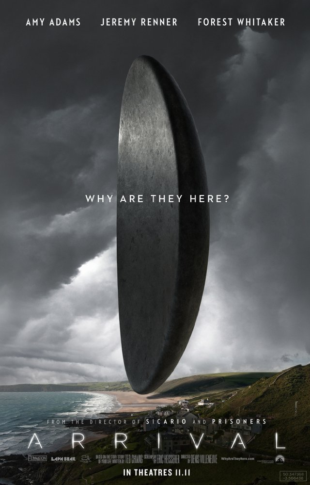
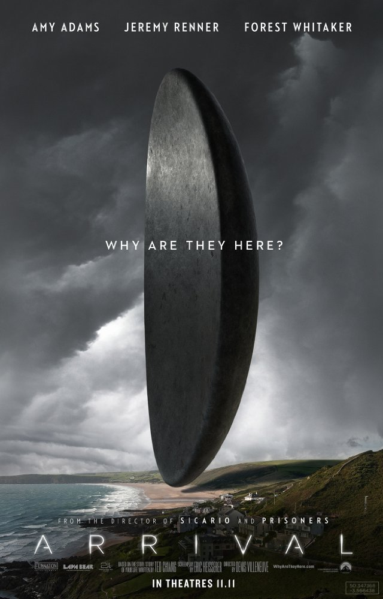

Film
Previously, I wrote a series of film-related articles for my high school's newspaper. This birthed my interest in dissecting films and analyzing them, critiquing them during my free time. Presented here, you will see the most recent films I have watched—as well as my all-time favorites—and how I feel about them in short excerpts.
*Click on any of the photos to read my opinions.
Favorite films:


Recently watched:

 

Archives
Feel free to visit my letterbloxd profile here!